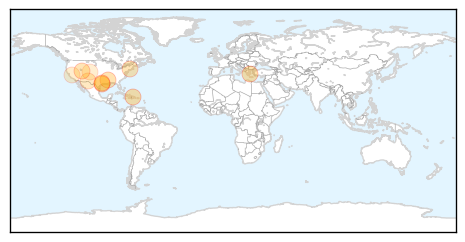
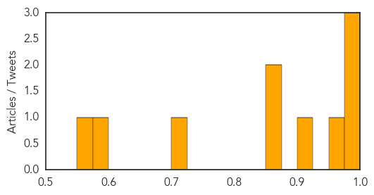

West Nile Virus
30-Day Web Trend
0 alerts, 0 warnings

30-Day Twitter Trend
0 alerts, 0 warnings

Article Locations

Article Confidences
Top Articles:
- 0.998
- West Nile virus contributes to Montgomery County man's death
- 0.993
- Eighth West Nile case, first death reported in Montgomery County
- 0.992
- One new case of chikungunya virus identified; resident dies of West Nile
- 0.969
- Greece reports first West Nile virus case this year
- 0.913
- Yazoo County resident dies from West Nile virus
- 0.860
- West Nile Virus in Utah County
- 0.856
- Connecticut having mild mosquito season so far
- 0.713
- Health Officials: Take steps to avoid West Nile
- 0.596
- West Nile worries worsen, new virus details kept secret
- 0.550
- County to overstep city, spray for mosquitoes
Top Tweets:
-
No tweets found for Aug 13, 2014
Unknown
30-Day Web Trend
0 alerts, 0 warnings

30-Day Twitter Trend
6 alerts, 1 warnings

Article Locations

Article Confidences
Top Articles:
- 0.918
- West Bengal: Death toll in encephalitis outbreak climbs to 212
- 0.917
- Chicago Tribune
- 0.917
- Chicago Tribune
- 0.910
- The world windows to Thailand
- 0.910
- The world windows to Thailand
- 0.910
- The world windows to Thailand
- 0.886
- Gaza hospitals, health facilities need urgent donor support
- 0.875
- Third ‘Rabbit Fever’ Case Identified « CBS Denver
- 0.866
- Two more rockets fired from Gaza hit Israel
- 0.866
- Israel and Palestinians agree to extend truce 72 hours
- 0.866
- Hamas spokesman denies any rockets fired from Gaza at Israel
- 0.866
- Israeli police confirm rocket strike from Gaza despite truce
- 0.866
- Rocket alerts sounded in southern Israel
- 0.866
- Filipino nationals wait before boarding a ship as part of an evacuation from conflict-torn Libya, in Benghazi
- 0.866
- Ukraine's Naftogaz warns of possible gas transit disruptions
- 0.866
- Russia calls "absurd" suspicions aid to Ukraine is cover for invasion
- 0.866
- France says will supply arms to Iraqi Kurds rapidly
- 0.866
- Iraq's Maliki says Abadi's appointment as PM "has no value"
- 0.866
- Magnitude 5.8 earthquake strikes southwest Mexico -USGS
- 0.866
- Militants sit on top of armoured personnel carrier at a training camp near border with Ukraine close to village of Malaya Kamenka in Rostov region
- 0.866
- Magnitude 5.1 earthquake strikes Ecuador's capital of Quito -USGS
- 0.851
- Fluoride: benefit or risk?
- 0.851
- Bangkok Post
- 0.851
- Bangkok Post
- 0.826
- Rabbit fever confirmed in animal in Greenwood Village
- 0.824
- River Dart Country Park shuts down as officials inspect suspected Norovirus outbreak
- 0.799
- Rabies killing children in Ashanti region
- 0.785
- Rabies killing children in Ashanti region
- 0.764
- Maine concerned about tick-borne diseases
- 0.762
- Cancer cases on the rise, medical care lags behind
- 0.748
- Salmonella cases linked to multistate outbreak, health officials say
- 0.689
- Contaminated sausages 'kill 12 people' in Denmark listeria outbreak
- 0.672
- 77 people killed, 227 injured in heavy flooding across Sudan
- 0.667
- Zim's healthcare system now ‘in crisis’
- 0.659
- Naegleria claims another life
- 0.613
- UPDATE 1-U.S. advisory panel recommends Prevnar 13 vaccine for elderly
- 0.595
- WHO: Gaza Hospitals, Health Facilities "In Dire Need"
- 0.562
- Cystic Fibrosis Patients At Risk From Bacterial Strains Resistant To Antibodies
- 0.536
- Parvovirus attacking puppies in Central Illinois
- 0.536
- World Vision Supporting Response to Floods-Induced Emergency in Sudan - Sudan
- 0.523
- U.S. advisory panel recommends Prevnar 13 vaccine for elderly
- 0.501
- Austin Health hospital mistakenly 'kills off' over 200 patients sending death notices to GPs
Top Tweets:
- 0.666
- Flu Tip: If you have the flu make sure to drink plenty of water! See your GP too. You may need antiviral medications.